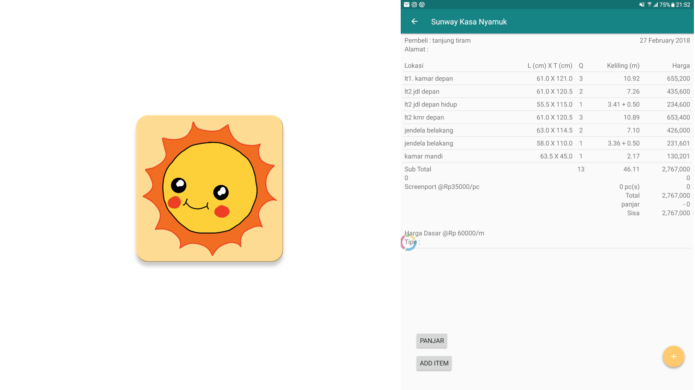

Projects
Java | Android | HTML | CSS | Javascript | Social Movement ♥
#projectempathy

Applied basic usage of HTML, CSS, a little bit of Javascript, Wordpress and A LOT OF CREATIVITY.
A project that my friends and I initiated to bridge the gap between the society and the minorities. Click here to learn more.
#MicCheck

Used Android APIs and basic UDPs and port assigning
An app that replaces physical microphones which tend to fail due to lack of battery capacity. By using this app, teachers, lecturers and speakers only need to connect their laptop to the projector which usually comes with the sound system and they are on the go. Click here to try.
#SunwayKasanyamuk
Java + Android + A cup of coffee + A full meal of inspiration
I started this project a year ago when I just finished my internship at TinyMOS. With the entrepreneurial spirits i cultivated while working in the startup company, I start to think how to solve daily problems using skills that I have. Boom, my first app writen form scratch to help a local business in my home country Medan, Indonesia. Click here to download the .apk sample
#WirelessTrackpad

INSPIRED and fueled by laziness
The idea of this project crossed my mind when I was watching movies on a family TV connected to my PC. To control the PC I had a wireless mouse which worked well but at times I could not find a surface to use it and I was too lazy to get off my bed to find for a decent surface. Thus, (*light bulb on) I ask my self why not integrate android phone's touch screen to control my PC instead.